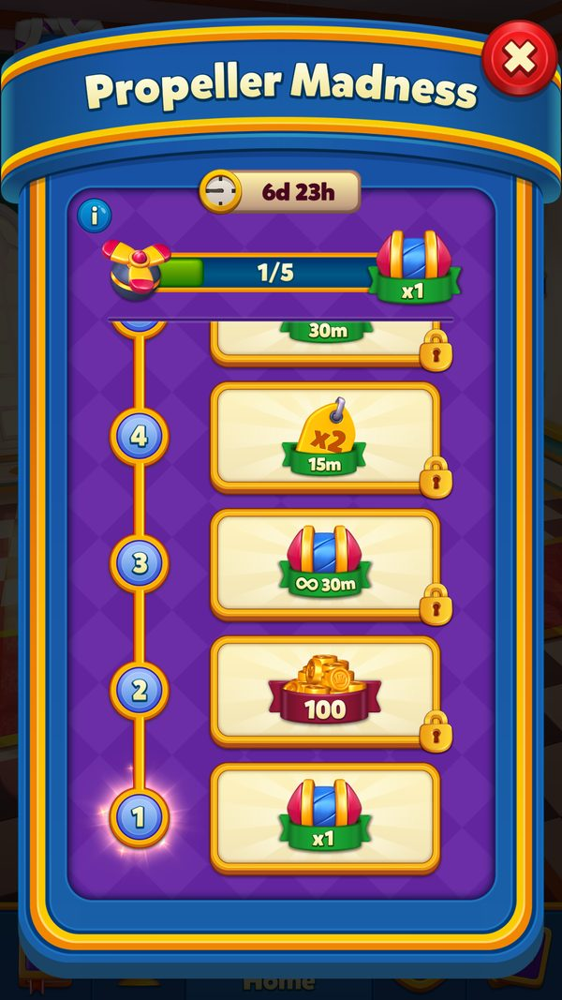

Cơn Sốt Chong Chóng (Propeller Madness)
Sự kiện thanh tiến độ 20 bước: nổ Propeller trong level để tự động nhận thưởng, không cần bấm claim.
Mô tả
- Propeller Madness là sự kiện solo dạng 'thanh tiến độ vô tận': mọi Propeller người chơi kích nổ trong level đều được đếm vào một thanh bar chung.
- Thanh bar hiện ở cả màn hình Home (MadnessBarType.Home) lẫn ngay trong level (MadnessBarType.InGame), nên người chơi luôn thấy mình còn thiếu bao nhiêu.
- Sự kiện chia thành 20 bước; mỗi bước có một mốc target riêng, đạt đủ là nhận thưởng của bước đó rồi bar reset về 0 cho bước kế tiếp.
- Điểm khác biệt lớn nhất so với event khác: người chơi KHÔNG cần bấm nút nhận — thưởng được trao tự động qua chuỗi animation khi vừa về Home sau level.
- Target các bước không tăng đều mà xen kẽ nhỏ/lớn (5, 10, 25, 100, 20, 200, ... tới 8000) vì mỗi bước đếm độc lập, không cộng dồn.
- Ba bước 11, 15, 19 là rương có tên riêng Small, Medium, Big chứa booster; các bước còn lại trả Coins, unlimited booster hoặc Event Multiplier.
- Bật Event Multiplier trước khi vào level giúp nhân số Propeller thu được, làm thanh bar chạy nhanh hơn nhiều lần.
- Người đã mở khóa Super Booster sẽ được chuyển sang bảng bước thứ hai (config2) với target và phần thưởng khác.
- Hoàn thành bước cuối (bước 20, target 8000) là kết thúc sự kiện: dialog chúc mừng bật lên, icon và thanh bar biến mất.
- Cùng một hệ thống (MadnessManager) còn phục vụ biến thể Book of Treasure — chỉ khác loại vật phẩm thu thập và giao diện.
Lưu ý
Tình trạng ảnh đã rà soát
Có ảnh màn hình
Gallery có ảnh game đã kiểm tra; số ảnh không biểu thị mọi trạng thái hoặc use case đã được chụp.
Rà soát ngày 08/10/2026. Xem bảng kiểm kê toàn wiki.
Ảnh chụp màn hình (1)
Bổ sung ngày 08/10/2026, LDPlayer Android 9, 1080×1920, Royal Match v38174. Game chạy offline bằng bản sao save; config dùng cache thật/default APK khi có. EventId, thời hạn, progress hoặc AB có thể là fixture thử; ảnh không xác nhận server nhận claim hay có người thi đấu thật. Các ảnh cũ giữ nguyên nguồn playtest trước. Bấm ảnh để phóng to, dùng phím ← → để chuyển ảnh.


Mở khóa & điểm vào
MadnessManager.MadnessUnlockLevel = 28 (const); get_IsLevelSatisfied kiểm tra level. ShouldShowIcon() = còn thời gian, chưa IsCompleted, không IsDisabledByBackend. Chỉ chạy khi MadnessEventInfo.Type được hỗ trợ: IsEventTypeSupported chỉ trả true cho MadnessEventType.Propeller (0) và MadnessEventType.Book (3) — TNT (1) và LightBall (2) đã bị bỏ (log 'MadnessType:{0} is not supported'). CanShowEventIconLocked cho phép hiện icon khoá sớm.
Điểm vào:
- Thanh Madness ở Home (MadnessBarType.Home) và trong game (MadnessBarType.InGame)
- Icon Madness ở Home (GetIcon)
- Info dialog tự động (TryAddStartDialog log 'Push info dialog by {0}')
- Dialog hoàn thành bước (TryAddCompletedDialog)
- Deeplink 'propellermadness' (hoặc 'bookoftreasure' cho biến thể Book)
Cách hoạt động
- Người chơi đạt Level 28 (MadnessUnlockLevel = 28) và server đang chạy một event Madness loại Propeller (Type = 0) thì tính năng mở (get_IsLevelSatisfied, IsEventTypeSupported).
- Client nhận MadnessEventInfo từ gói refresh gồm Id, Type, RemainingTime, ConfigVersion, Config1, Config2; nếu Id khác lượt trước thì tiến độ được reset (UpdateInfo, ResetProgressForNewEvent).
- Config được ghi xuống local vào key 'MadnessConfig' và 'MadnessConfig2'; hạn kết thúc tính bằng thời gian hiện tại + RemainingTime (UpdateConfig, UpdateConfig2).
- Hệ thống chọn bảng bước: dùng config2 khi hội đủ ba điều kiện — đã xem tutorial Super Booster, Level ≥ GetSuperBoosterUnlockLevel và config2 đã được tạo (isConfig2Created); ngược lại dùng config1 (GetShouldUseConfig2, GetSelectedConfigForStep).
- Icon và thanh bar hiện ở Home cùng trong level, kèm target của bước hiện tại; bundle tài nguyên là FeatureBundleType 0x14 = 20 cho Propeller (ShouldShowIcon, GetBundleType).
- Người chơi bấm vào bar/icon để mở info dialog liệt kê đủ 20 bước với target và phần thưởng từng bước (TryAddStartDialog, GetMadnessRowsFromConfig).
- Trước khi vào level, người chơi có thể bật Event Multiplier để nhân số Propeller thu được trong lượt chơi (CanMultiply, GetMultiplierTagConfig, EventsHelper.GetCollectableCountWithMultiplier).
- Trong level, mỗi lần Propeller nổ được đếm vào session; hệ thống dùng exploderIdMatchItemCount để tránh đếm trùng theo id vật nổ (MadnessSessionData, GetCollectItemType).
- Lượt đi thừa cuối level cũng được quy đổi thành Propeller theo hệ số RemainingMovesMultiplier = 5; thanh bar tham chiếu InitialPropellerCount = 10.
- Về Home sau khi thắng, luồng tự động chạy: so số đã thu với target bước hiện tại rồi tính trước các bước sẽ vượt qua (TryAddFlowActions, TryAddBarAnimationsAndClaims, TryCacheRewards).
- Animation PlayMadnessCollectAction chạy: Propeller bay vào bar (EaseBarDuration = 1.6s, BarFullDuration = 0.5s, nếu nhiều lần claim thì MultipleClaimFillDuration = 0.4s).
- Mỗi bước đạt được sẽ tự động trao thưởng: gói InventoryPackage.GetMadnessPackage được cộng thẳng vào kho, nguồn ghi là '{MadnessEventType}-{step}' ví dụ 'Propeller-11' (GiveRewards).
- Lên bước: step tăng 1, count đặt về 0, ghi cờ config2 cho bước mới và cập nhật nhiệm vụ sự kiện id 0x10 = 16 và 0x11 = 17 (UpdateStep, MissionEventsCommonTaskHelper.SetMissionProgressAmount).
- Sau khi bar chạy xong, tiến độ (step, count, eventId nén trong 1 long) được đồng bộ lên server qua UserManager.SendDataToBackend và ping định kỳ (PingHttpCommand.UpdateMadnessData).
- Khi vượt bước cuối (bước 20, target 8000), IsCompleted() trả true: dialog hoàn thành bật lên, thống kê UserStatsHelper.OnPropellerMadnessCompletion được ghi, icon và bar ẩn đi cho tới lượt event mới.
Luồng chi tiết theo code
FillFromLocal() nạp config từ AppKeyValue 'MadnessConfig' và 'MadnessConfig2' (log 'Load MadnessConfig V:{0}', 'Load MadnessConfig from local after platform disconnect = {0}') và tiến độ từ 'Madness'. Server gửi MadnessEventInfo (Id, Type, RemainingTime, ConfigVersion, Config1, Config2). UpdateInfo(info) log 'MadnessInfo = {0}': nếu Type không hỗ trợ → log 'MadnessType:{0} is not supported' và bỏ qua; nếu event id khác → MadnessProgress.ResetProgressForNewEvent (log 'Reset progress for new event: {0}'); nếu chỉ đổi thời hạn → log 'End Time changed from backend for event: {0}'; UpdateConfig(configVersion, config1) ghi 'MadnessConfig' (log 'MadnessConfig V:{0} = {1}') và UpdateConfig2 ghi 'MadnessConfig2' (log 'MadnessConfig2 = {0}'); GameNotificationService.TryUpdateUserPropellerMadnessEventIdTag; UserManager.SendDataToBackend. GetShouldUseConfig2() trả true khi SuperBoosterManager.HasShowedTutorial && Level ≥ SuperBoosterManager.GetSuperBoosterUnlockLevel && isConfig2Created — tức người chơi đã mở Super Booster thì dùng bảng bước thứ hai. Trong level, MadnessSessionData (kế thừa BeforeAfterData) đếm số vật phẩm khớp loại (GetCollectItemType/GetCollectMatchType theo MadnessEventType) qua exploderIdMatchItemCount. Ở Home, TryAddFlowActions() → TryAddBarAnimationsAndClaims(): so cumulativeCollected với GetCurrentTarget(); TryCacheRewards(beforeCollected, cumulativeCollected) lặp: khi cumulativeCollected ≥ target thì thêm step vào progressBarSteps, UpdateStep(step + 1) (đặt count = 0, log 'Update Step - {0}', MissionEventsCommonTaskHelper.SetMissionProgressAmount(0x10, 1) và (0x11, 1)), lấy step mới; kết quả gói vào MadnessAnimationData (beforeCollected, afterCollected, progressBarSteps, isEventCompletedAfterAnimation, LifeRewardMinutes, coinAnimations). GiveCachedRewards → GiveRewards(stepConfig) cho từng bước: InventoryPackage.GetMadnessPackage, UserManager.AddInventoryPackage, AddSeasonalCardCollectionPackage với source '{MadnessEventType}-{step}', AnalyticsManager.MadnessClaim(type, eventId, step, target, package). Khi IsCompleted() → UserStatsHelper.OnPropellerMadnessCompletion (hoặc OnBookOfTreasureCompletion cho Type = Book). Animation có thể bị huỷ giữa chừng (CancelAnimation, AnimationCancelled) khi đổi scene.
Phần thưởng
PHẦN THƯỞNG PROPELLER MADNESS (20 BƯỚC MẶC ĐỊNH)
| Mốc/Rương/Hạng | Điều kiện | Phần thưởng |
|---|---|---|
| Bước 1 | 5 Propeller |  1Rocket 1Rocket |
| Bước 2 | 10 Propeller |  100Coin 100Coin |
| Bước 3 | 25 Propeller | ∞30 phútUnlimited Rocket |
| Bước 4 | 100 Propeller |  15Event multiplier 15Event multiplier |
| Bước 5 | 20 Propeller |  ∞30 phútUnlimited Lives ∞30 phútUnlimited Lives |
| Bước 6 | 200 Propeller | 300Coin |
| Bước 7 | 50 Propeller |  ∞30 phútUnlimited Light Ball ∞30 phútUnlimited Light Ball |
| Bước 8 | 300 Propeller | 30Event multiplier |
| Bước 9 | 100 Propeller |  ∞30 phútUnlimited TNT ∞30 phútUnlimited TNT |
| Bước 10 | 400 Propeller | 500Coin |
| Bước 11 — Rương Small | 150 Propeller |  1Royal Hammer 1Royal Hammer  1Jester Hat 1Jester Hat |
| Bước 12 | 200 Propeller | 30Event multiplier |
| Bước 13 | 800 Propeller | 1000Coin |
| Bước 14 | 200 Propeller | ∞60 phútUnlimited TNT |
| Bước 15 — Rương Medium | 300 Propeller |  1Cannon 1Cannon |
| Bước 16 | 1500 Propeller | 30Event multiplier |
| Bước 17 | 400 Propeller | ∞120 phútUnlimited Lives |
| Bước 18 | 4000 Propeller | 5000Coin |
| Bước 19 — Rương Big | 500 Propeller | 1All in-game boosters ∞60 phútUnlimited Lives |
| Bước 20 (cuối) | 8000 Propeller | 10000Coin |
TỔNG THƯỞNG TOÀN SỰ KIỆN
| Mốc/Rương/Hạng | Điều kiện | Phần thưởng |
|---|---|---|
| Tổng Coins | Hoàn thành 6 bước thưởng coin (2, 6, 10, 13, 18, 20) | 16900Coin (suy luận: 100 300 500 1000 5000 10000) |
| Tổng Event Multiplier | Các bước thưởng 2xE (4, 8, 12, 16) | 105 phút 2xE (suy luận: 15 30 30 30) |
| Tổng Unlimited Lives | Bước 5, 17, 19 | ∞210 phútUnlimited Lives (suy luận: 30 120 60) |
| Tổng Unlimited TNT | Bước 9, 14 | ∞90 phútUnlimited TNT (suy luận: 30 60) |
| Tổng Unlimited Rocket / Lightball | Bước 3, 7 | ∞30 phútUnlimited Rocket ∞30 phútUnlimited Light Ball |
| Tổng booster rương | Bước 11, 15, 19 | 1Royal Hammer 1Jester Hat 1Cannon 1All in-game boosters |
BẢNG BƯỚC THAY THẾ (SERVER CẤU HÌNH)
| Mốc/Rương/Hạng | Điều kiện | Phần thưởng |
|---|---|---|
| MadnessConfig.steps (Config1) | Người chơi chưa mở khóa Super Booster | 20 bước mặc định như bảng trên |
| MadnessConfig2 (Config2) | Đã xem tutorial Super Booster, Level ≥ GetSuperBoosterUnlockLevel và isConfig2Created | Bảng target/thưởng riêng (server) |
| butlerMultiplierAbSteps | Người chơi thuộc nhánh AB butler multiplier | Bảng target/thưởng riêng không có trong config mặc định client (server) |
| multiplierTokenOverride | Người chơi thuộc nhóm dùng Multiplier Token | Thay thưởng gốc của bước bằng 2xT hiển thị bằng MadnessPoolId.MultiplierToken = 42 (server) |
Phần thưởng theo code
| Ngữ cảnh | Phần thưởng | Evidence |
|---|---|---|
| 20 bước (mặc định) | 1Rocket 100Coin ∞30 phútUnlimited Rocket 15Event multiplier ∞30 phútUnlimited Lives 300Coin ∞30 phútUnlimited Light Ball 30Event multiplier ∞30 phútUnlimited TNT 500Coin 1Royal Hammer 1Jester Hat (Small) 30Event multiplier 1000Coin ∞60 phútUnlimited TNT 1Cannon (Medium) 30Event multiplier ∞120 phútUnlimited Lives 5000Coin 1All in-game boosters ∞60 phútUnlimited Lives (Big) 10000Coin | propeller_madness_default_config.json steps |
| Tổng coin toàn event | 16.900 Coins (100 300 500 1000 5000 10000) | propeller_madness_default_config.json (suy luận từ tổng các bước có mã C) |
| Tổng Event Multiplier | 135 phút 2xE (15 30 30 30 30) | propeller_madness_default_config.json (suy luận) |
| Nguồn thưởng | '{MadnessEventType}-{step}' ví dụ 'Propeller-11' | MadnessManager.GiveRewards |
Số liệu chính
| Chỉ số | Giá trị | Nguồn |
|---|---|---|
| Mở khóa | Level 28 | MadnessManager.MadnessUnlockLevel |
| Số bước mặc định | 20 bước | propeller_madness_default_config.json steps[0..19] |
| Target bước đầu | 5 Propeller | steps[0].t |
| Target bước cuối | 8000 Propeller | steps[19].t |
| Tổng Coins toàn event | 16900 C (suy luận) | rewards / propeller_madness_default_config.json |
| Tổng Event Multiplier | 105 phút 2xE (suy luận) | propeller_madness_default_config.json steps[3]/[7]/[11]/[15] (15+30+30+30) |
| Số Propeller khởi tạo cho bar | 10 | MadnessManager.InitialPropellerCount |
| Hệ số quy đổi lượt đi thừa | 5 | MadnessManager.RemainingMovesMultiplier |
| Giới hạn event Id | 512 (lưu 9 bit) | MadnessProgress.EventIdLimit |
| Loại Madness được hỗ trợ | Propeller = 0, Book = 3 (TNT = 1, LightBall = 2 đã bỏ) | MadnessManager.IsEventTypeSupported / MadnessEventType |
| Mã sự kiện | EventType.PropellerMadness = 6 (BookOfTreasure = 5) | EventType |
| Bundle tài nguyên | 0x14 = 20 (Propeller), 0x13 = 19 (Book) | MadnessManager.GetBundleType |
| Nhiệm vụ sự kiện cập nhật khi lên bước | id 0x10 = 16 và 0x11 = 17 | MadnessManager.UpdateStep / MissionEventsCommonTaskHelper.SetMissionProgressAmount |
| Thời lượng ease thanh bar | 1.6 giây | MadnessBarProgress.EaseBarDuration |
| Thời lượng ease nhanh | 1.33 giây | MadnessBarProgress.FastEaseBarDuration |
| Thời lượng bar đầy | 0.5 giây | MadnessBarProgress.BarFullDuration |
| Thời lượng fill nhanh | 0.0928 giây | MadnessBarProgress.FastBarFillDuration |
| Thời lượng fill khi claim nhiều bước | 0.4 giây | MadnessBarProgress.MultipleClaimFillDuration |
| Độ trễ giữa các thẻ | 0.2 giây | MadnessBarProgress.CardClaimDelay |
| Độ trễ thanh tiến độ | 0.35 giây | MadnessBarProgress.ProgressBarDelay |
| Ngưỡng vẽ thanh bar | 0.03 đến 0.92 (0.96 khi chỉ 1 pack) | MadnessBarProgress.ProgressBarMinThreshold / ProgressBarMaxThreshold / ProgressBarMaxThresholdForSinglePack |
| Tỉ lệ fill tối thiểu | 0.004 | MadnessBarProgress.MinFillRatio |
| Số pool prefab thưởng | 50 giá trị (0..49) | MadnessPoolId |
| Pool Multiplier Token | 42 | MadnessPoolId.MultiplierToken |
| Thời lượng sự kiện | RemainingTime do server quyết định (server) | MadnessEventInfo.RemainingTime |
Ghi chú thiết kế
- Vì mỗi bước đếm độc lập và count reset sau khi lên bước, nên dồn Propeller cho một level lớn không có lợi hơn chia đều — quan trọng là tổng số lần nổ.
- Nên bật Event Multiplier ngay trước các bước target lớn (1500, 4000, 8000) để tận dụng tối đa; chính sự kiện cũng phát 105 phút 2xE ở các bước 4, 8, 12, 16.
- Thiết kế xen kẽ target nhỏ/lớn (5, 10, 25, 100, 20, 200…) tạo nhịp thưởng liên tục ở đầu và giữ chân người chơi trước các mốc nặng ở cuối.
- Ba rương Small/Medium/Big đặt ở bước 11, 15, 19 chia sự kiện thành ba chặng, mỗi chặng có một mục tiêu cảm xúc rõ ràng.
- Việc bỏ nút claim và trao thưởng tự động ngay khi về Home rút ngắn vòng lặp phản hồi, đổi lại phải khóa thao tác lần đầu để người chơi kịp hiểu chuyện gì xảy ra.
Use case (20)
Bấm vào từng use case để mở. Mở/đóng tất cả
UC-01 Mở khóa & hiện thanh Madness
Các bước- ShouldShowIcon(): còn RemainingTimeInMs, !IsCompleted(), !IsDisabledByBackend
- GetBundleType(eventType): Propeller → FeatureBundleType 0x14 (20), Book → 0x13 (19)
- MadnessBarProgress dựng thanh ở Home (MadnessBarType.Home) và trong game (MadnessBarType.InGame)
- ShouldShowIconWithClaim() bật trạng thái có thể nhận thưởng
| Actor | System |
|---|---|
| Trigger | Vào Home khi đủ level và server có event hỗ trợ |
| Điều kiện | Level ≥ 28 (get_IsLevelSatisfied), event chưa hoàn thành |
| Kết quả | Thanh tiến độ Madness hiện ở Home và trong level với target bước hiện tại |
| Quy tắc / số liệu | MadnessUnlockLevel = 28. |
| Evidence | MadnessManager.ShouldShowIcon; MadnessManager.ShouldShowIconWithClaim; MadnessManager.get_IsLevelSatisfied; MadnessManager.GetBundleType; MadnessManager.GetUnlockLevel; MadnessManager.GetIcon |
UC-02 Nhận event từ server & xử lý loại event
Các bước- UpdateInfo(MadnessEventInfo?) log 'MadnessInfo = {0}'
- IsEventTypeSupported(info.Type): chỉ Propeller (0) và Book (3); loại khác → log 'MadnessType:{0} is not supported'
- Nếu MadnessProgress.IsSameEvent(info.Id) = false → ResetProgressForNewEvent, log 'Reset progress for new event: {0}'
- Nếu cùng event mà thời hạn đổi → log 'End Time changed from backend for event: {0}'
- UpdateConfig(info.ConfigVersion, info.Config1) ghi key 'MadnessConfig'; UpdateConfig2(..., info.Config2) ghi 'MadnessConfig2'
- endDate = TimeUtil.CurrentLocalTimeInMs() + info.RemainingTime
- GameNotificationService.TryUpdateUserPropellerMadnessEventIdTag(eventId); UserManager.SendDataToBackend
| Actor | Server |
|---|---|
| Trigger | Gói refresh chứa MadnessEventInfo |
| Điều kiện | !IsDisabledByBackend |
| Kết quả | Client biết loại event, thời hạn và 2 bộ config |
| Quy tắc / số liệu | MadnessProgress.EventIdLimit = 512 (eventId lưu 9 bit trong long UserInventory). Dữ liệu local lưu chuỗi phân tách bằng '§'. |
| Evidence | MadnessManager.UpdateInfo; MadnessManager.IsEventTypeSupported; MadnessManager.UpdateConfig; MadnessManager.UpdateConfig2; MadnessProgress.IsSameEvent; MadnessProgress.ResetProgressForNewEvent |
UC-03 Chọn bộ config theo Super Booster
Các bước- GetShouldUseConfig2(): SuperBoosterManager.HasShowedTutorial && Level ≥ SuperBoosterManager.GetSuperBoosterUnlockLevel && isConfig2Created
- GetSelectedConfigForStep(step) trả config hoặc config2
- LiveOpsCommonKeyValueHandler.SetMadnessCurrentStepUseConfig2 ghi cờ (bit 0x28 = 40, 0x29 = 41 trong commonUseData1) để giữ nguyên bộ config trong một bước
- GetConfigVersion() trả version của bộ đang dùng
| Actor | System |
|---|---|
| Trigger | Người chơi mở khoá Super Booster |
| Điều kiện | isConfig2Created |
| Kết quả | Người chơi mở Super Booster thấy bảng target/thưởng khác |
| Quy tắc / số liệu | Cờ được chốt theo từng bước để không đổi giữa chừng. |
| Evidence | MadnessManager.GetShouldUseConfig2; MadnessManager.GetSelectedConfigForStep; MadnessManager.GetConfigVersion; MadnessManager.UpdateStep; LiveOpsCommonKeyValueHandler.SetMadnessCurrentStepUseConfig2 |
UC-04 Thu thap propeller trong level
Các bước- GetCollectItemType() trả ItemType theo MadnessEventType (bảng tra 4 phần tử); GetCollectMatchType() trả MatchType (khác 0 chỉ với Type = 3 / Book)
- MadnessSessionData (BeforeAfterData) cộng số vật phẩm khớp, exploderIdMatchItemCount đếm theo id vật nổ để tránh đếm trùng
- InitialPropellerCount = 10 — số propeller khởi tạo tham chiếu cho bar
- RemainingMovesMultiplier = 5 — hệ số quy đổi lượt đi thừa cuối level thành propeller
| Actor | Player |
|---|---|
| Trigger | Kích nổ Propeller (hoặc vật phẩm theo loại event) trong level |
| Điều kiện | Event đang chạy |
| Kết quả | Số đếm tăng trong session; thanh bar trong game chạy theo |
| Quy tắc / số liệu | MadnessSessionData kế thừa BeforeAfterData nên có before/after/shouldConsume và được lưu khi restore level. |
| Evidence | MadnessManager.GetCollectItemType; MadnessManager.GetCollectMatchType; MadnessSessionData; MadnessManager.InitialPropellerCount; MadnessManager.RemainingMovesMultiplier |
UC-05 Chạy thanh bar và tự động nhận thưởng sau level
Các bước- TryAddFlowActions() → TryAddBarAnimationsAndClaims()
- MadnessBarProgress.SetBarValues(current, target) đặt giá trị bar
- TryCacheRewards(beforeCollected, cumulativeCollected): lặp trong khi cumulativeCollected ≥ target của bước → thêm step vào progressBarSteps, UpdateStep(step + 1), ShouldWaitForClaimAnimation = true
- Tạo MadnessAnimationData (beforeCollected, afterCollected, progressBarSteps, isEventCompletedAfterAnimation, LifeRewardMinutes, coinAnimations)
- FlowManager.Push(PlayMadnessCollectAction) chạy animation bay propeller vào bar
- GiveCachedRewards(madnessAnimationData) → GiveRewards cho từng bước
- UserManager.SendDataToBackend
| Actor | System |
|---|---|
| Trigger | Về Home sau khi thắng level |
| Điều kiện | ShouldShowIconWithClaim() |
| Kết quả | Bar chạy, các bước đạt được tự động trao thưởng (không cần bấm) |
| Quy tắc / số liệu | MadnessBarProgress: EaseBarDuration = 1.6s, FastEaseBarDuration = 1.33s, BarFullDuration = 0.5s, FastBarFillDuration = 0.0928s, MultipleClaimFillDuration = 0.4s, CardClaimDelay = 0.2s, ProgressBarDelay = 0.35s, ngưỡng hiển thị 0.03..0.92 (0.96 khi chỉ 1 pack), MinFillRatio = 0.004. |
| Evidence | MadnessManager.TryAddFlowActions; MadnessManager.TryAddBarAnimationsAndClaims; MadnessManager.TryCacheRewards; MadnessManager.GiveCachedRewards; MadnessManager.get_AnimationData; MadnessBarProgress.SetBarValues |
UC-06 Trao thưởng một bước
Các bước- GiveRewards(stepConfig): InventoryPackage.GetMadnessPackage(stepConfig)
- UserManager.AddInventoryPackage; UserManager.AddSeasonalCardCollectionPackage với source = '{MadnessEventType}' + '-{step}'
- AnalyticsManager.MadnessClaim(type, eventId, step, target, package)
- PrepareForCoinAnimation(package) log '({0}, {1}) coins are added to animation data'; AddLifeRewardToAnimation(package) và PrepareLifeInfoTextForAnimation(unlimitedLifetimeMin) cho hiệu ứng
- GetCoinRewardPoolId(amount) chọn pool coin theo mệnh giá (Coins100/500/1000/5000/10000/50000)
| Actor | System |
|---|---|
| Trigger | Đạt target của bước |
| Điều kiện | - |
| Kết quả | Người chơi nhận booster/coin/multiplier của bước |
| Quy tắc / số liệu | Nguồn thưởng dạng '{Type}-{step}' (ví dụ 'Propeller-11'). |
| Evidence | MadnessManager.GiveRewards; MadnessManager.PrepareForCoinAnimation; MadnessManager.AddLifeRewardToAnimation; MadnessManager.GetCoinRewardPoolId; InventoryPackage.GetMadnessPackage |
UC-07 Chuyển bước (step up) và reset đếm
Các bước- UpdateStep(newStep): MadnessProgress.step = newStep, count = 0, UserInventory.UpdateMadness
- Ghi cờ config2 cho bước mới (LiveOpsCommonKeyValueHandler)
- MissionEventsCommonTaskHelper.SetMissionProgressAmount(0x10 = 16, 1) và (0x11 = 17, 1) cập nhật nhiệm vụ sự kiện
- Log 'Update Step - {0}' với MadnessProgress.ToString()
| Actor | System |
|---|---|
| Trigger | Đủ target |
| Điều kiện | - |
| Kết quả | Bar reset về 0, target mới của bước kế được nạp |
| Quy tắc / số liệu | Target từng bước là ĐỘC LẬP (count reset mỗi bước), không cộng dồn — vì vậy dãy target 5, 10, 25, 100, 20, 200, ... không đơn điệu tăng. |
| Evidence | MadnessManager.UpdateStep; MadnessManager.GetCount; MadnessManager.GetCurrentTarget; MadnessManager.GetTargetForStep; UserInventory.UpdateMadness |
UC-08 Hoàn thành toàn bộ event
Các bước- IsCompleted(): step vượt số phần tử của MadnessConfig.SelectedSteps
- GiveRewards phát hiện IsCompleted → UserStatsHelper.OnPropellerMadnessCompletion (Type = Propeller) hoặc OnBookOfTreasureCompletion (Type = Book)
- TryAddCompletedDialog(stepConfig, rewardPivot) mở dialog kết thúc
- ShouldShowIcon() trả false → icon/bar ẩn
| Actor | Player |
|---|---|
| Trigger | Vượt bước cuối (bước 20 mặc định) |
| Điều kiện | IsCompleted() |
| Kết quả | Event kết thúc cho người chơi, thanh bar biến mất |
| Quy tắc / số liệu | Mặc định 20 bước; tổng thưởng coin 100 + 300 + 500 + 1000 + 5000 + 10000 = 16.900 Coins. |
| Evidence | MadnessManager.IsCompleted; MadnessManager.GiveRewards; MadnessManager.TryAddCompletedDialog; MadnessManager.ShouldShowIcon |
UC-09 Hủy animation khi đổi scene
Các bước- OnSceneChange(scene) → ClearAnimationCache()
- CancelAnimation(madnessCollectAnimation, fromSceneChange, propellerRushCollectAnimation) đặt AnimationCancelled = true
- TryCancelCoinAnimation(), TryCancelLifeAndMultiplierAnimation(fromSceneChange), TryCancelMultiplierAnimation(fromSceneChange) huỷ hiệu ứng con
- ClearCancelledNotificationsData() dọn dữ liệu thông báo bị huỷ
- Thưởng đã được cộng vào kho trước đó nên không mất
| Actor | System |
|---|---|
| Trigger | Người chơi vào level hoặc đổi scene giữa lúc bar đang chạy |
| Điều kiện | Đang chạy MadnessCollectAnimation |
| Kết quả | Animation dừng an toàn, không mất thưởng |
| Quy tắc / số liệu | ShouldPreventStickerAnimation chặn animation sticker khi cần. |
| Evidence | MadnessManager.CancelAnimation; MadnessManager.OnSceneChange; MadnessManager.ClearAnimationCache; MadnessManager.TryCancelCoinAnimation; MadnessManager.TryCancelLifeAndMultiplierAnimation; MadnessManager.get_AnimationCancelled |
UC-10 Thay thưởng bằng Multiplier Token
Các bước- TryReplaceWithMultiplierToken(originalReward, configForStep) đổi phần thưởng của bước sang Multiplier Token
- GetOverridenRewardStep(step, rewardStep, configForStep) áp EventRewardOverrider
- MadnessPoolId.MultiplierToken (42) dùng để hiển thị
| Actor | System |
|---|---|
| Trigger | Người chơi thuộc nhóm dùng Multiplier Token |
| Điều kiện | MadnessConfig.multiplierTokenOverride có dữ liệu |
| Kết quả | Một số bước trả Multiplier Token thay vì thưởng gốc |
| Quy tắc / số liệu | multiplierTokenOverride là mảng MadnessStep song song với steps. |
| Evidence | MadnessManager.TryReplaceWithMultiplierToken; MadnessManager.GetOverridenRewardStep; MadnessConfig.multiplierTokenOverride; MultiplierTokenManager |
UC-11 Nhanh AB butler multiplier
Các bước- MadnessConfig.SelectedSteps chọn butlerMultiplierAbSteps thay vì steps
- GetStepCount()/GetStepInfo()/GetMadnessRowsFromConfig() đọc theo bộ đã chọn
| Actor | System |
|---|---|
| Trigger | Người chơi thuộc nhóm AB butler multiplier |
| Điều kiện | MadnessConfig.butlerMultiplierAbSteps có dữ liệu |
| Kết quả | Bảng target/thưởng khác cho nhóm AB |
| Quy tắc / số liệu | Config mặc định trong client không có butlerMultiplierAbSteps (chỉ server gửi). |
| Evidence | MadnessConfig.get_SelectedSteps; MadnessManager.GetStepCount; MadnessManager.GetMadnessRowsFromConfig; MadnessConfig.butlerMultiplierAbSteps |
UC-12 Mở info dialog (danh sách thưởng)
Các bước- TryAddStartDialog(origin) log 'Push info dialog by {0}', ghi key 'MadnessAutoDialogState'
- GetMadnessRowsFromConfig() dựng List<MadnessStepRowData> (step, madnessReward, rewardName)
- CreateMadnessRewardListPools() tạo pool từ GetPrefabNames() (hậu tố 'BarReward', particle 'MadnessRewardListParticleView')
- Spawn(MadnessPoolId, parent) / Recycle(item) (log 'Same item to push: {0}' nếu đẩy trùng)
- SetInfoDialogAsSeen() ghi 'MadnessAutoDialogState'
- DestroyMadnessRewardListPool() khi đóng
| Actor | Player |
|---|---|
| Trigger | Bấm vào bar/icon hoặc dialog tự bật |
| Điều kiện | ShouldShowIcon() && AEventManager.CanShowAutoPopup (với auto) |
| Kết quả | Người chơi xem toàn bộ 20 bước và phần thưởng |
| Quy tắc / số liệu | MadnessPoolId có 50 giá trị (0..49) ánh xạ mọi loại thưởng hiển thị được. |
| Evidence | MadnessManager.TryAddStartDialog; MadnessManager.GetMadnessRowsFromConfig; MadnessManager.CreateMadnessRewardListPools; MadnessManager.GetPrefabNames; MadnessManager.Spawn; MadnessManager.Recycle; MadnessManager.SetInfoDialogAsSeen |
UC-13 Mở bằng deeplink
Các bước- GetDeeplinkAction() trả 'propellermadness' (Type = Propeller) hoặc 'bookoftreasure' (Type = Book)
- TryAddDeeplinkDialog() log 'Deeplink madness info dialog: ' và ghi 'MadnessAutoDialogState'
| Actor | Player |
|---|---|
| Trigger | Link/notification 'propellermadness' hoặc 'bookoftreasure' |
| Điều kiện | ShouldShowIcon() |
| Kết quả | Mở thẳng info dialog Madness |
| Quy tắc / số liệu | Cùng một manager phục vụ 2 event khác nhau về mặt hiển thị. |
| Evidence | MadnessManager.GetDeeplinkAction; MadnessManager.TryAddDeeplinkDialog |
UC-14 Nhân bội propeller (multiplier)
Các bước- GetMultiplierTagConfig() tạo icon nhân bằng g__CreateMadnessIcon|128_0 với prefab 'MultiplierTagPropellerIcon' (Propeller) hoặc 'MultiplierTagBookIcon' (Book)
- EventsHelper.GetCollectableCountWithMultiplier() nhân số propeller thu được
- Thưởng 2xE (EventMultiplier) trong config cũng cấp thêm thời gian nhân sự kiện
| Actor | Player |
|---|---|
| Trigger | Bật multiplier trước level |
| Điều kiện | CanMultiply() (chưa IsCompleted) |
| Kết quả | Bar chạy nhanh hơn nhiều lần |
| Quy tắc / số liệu | Mã thưởng '2xE' = RewardType.EventMultiplier (22), giá trị a là số phút (15/30 trong config mặc định). |
| Evidence | MadnessManager.CanMultiply; MadnessManager.GetMultiplierTagConfig; EventsHelper.GetCollectableCountWithMultiplier; RewardType.EventMultiplier |
UC-15 Thưởng thẻ (card) chặn luồng
Các bước- get_BlockingCardRewardCount đếm số phần thưởng thẻ cần chặn luồng (dùng LINQ 'predicate'/'source')
- GivenCardRewardIndex và givenBlockingCardRewardCount theo dõi đã trao bao nhiêu
- seasonalCardCollectionRewards gom SeasonalCardCollectionRewardPanelData để hiện panel sau animation
- MadnessBarProgress.onLastCardClaimAction gọi khi thẻ cuối được nhận (cardClaimAnimationPlaying)
| Actor | System |
|---|---|
| Trigger | Bước thưởng chứa Seasonal Card Pack |
| Điều kiện | get_ShouldBlockForCurrentCardReward |
| Kết quả | Luồng Home chờ animation mở thẻ xong mới tiếp tục |
| Quy tắc / số liệu | CardClaimDelay = 0.2s giữa các thẻ. |
| Evidence | MadnessManager.get_BlockingCardRewardCount; MadnessManager.get_ShouldBlockForCurrentCardReward; MadnessManager.get_GivenCardRewardIndex; MadnessBarProgress.onLastCardClaimAction |
UC-16 Server tắt event / xóa dữ liệu
Các bước- MadnessDisabledByBackend(isDisabled) log 'Disable madness {0} from backend '
- ClearMadnessInfo() log 'ClearMadnessInfo - {0}' và xoá key 'Madness', 'MadnessConfig', 'MadnessConfig2', 'MadnessAutoDialogState'
- IsDisabledByBackend = true → UpdateInfo bỏ qua
| Actor | Server |
|---|---|
| Trigger | Backend gửi cờ tắt |
| Điều kiện | - |
| Kết quả | Event và toàn bộ dữ liệu cục bộ được xoá |
| Quy tắc / số liệu | - |
| Evidence | MadnessManager.MadnessDisabledByBackend; MadnessManager.ClearMadnessInfo; MadnessManager.get_IsDisabledByBackend |
UC-17 Migration config sau cập nhật
Các bước- RefreshMadnessConfigAfterMigration() log 'Resetting madness config version after migration!' và 'MadnessConfig2 = {0}'
- UpdateConfig() ghi lại 'MadnessConfig'
- MigrateTutorial() ghi key 'LiveOpsCommonUse1'
| Actor | System |
|---|---|
| Trigger | Cập nhật phiên bản có config2 |
| Điều kiện | - |
| Kết quả | Config và tutorial được chuyển sang định dạng mới |
| Quy tắc / số liệu | CompleteTutorials() cũng ghi 'LiveOpsCommonUse1'. |
| Evidence | MadnessManager.RefreshMadnessConfigAfterMigration; MadnessManager.MigrateTutorial; MadnessManager.CompleteTutorials |
UC-18 Đổi tài khoản / mất kết nối nền tảng
Các bước- FillFromLocal(bool fromChangeUserToLocalOldUser) log 'Load MadnessConfig from local after platform disconnect = {0}'
- Nạp lại 'Madness', 'MadnessConfig', 'MadnessConfig2'
- ClearAnimationCache() dọn animation đang chờ
| Actor | Player |
|---|---|
| Trigger | Đăng nhập tài khoản khác hoặc mất kết nối Facebook/Game Center |
| Điều kiện | - |
| Kết quả | Tiến độ Madness đúng theo tài khoản hiện tại |
| Quy tắc / số liệu | - |
| Evidence | MadnessManager.FillFromLocal; MadnessManager.ClearAnimationCache; MadnessManager.ClearMadnessInfo |
UC-19 Khóa lần claim đầu tiên (touch lock)
Các bước- TryAddBarAnimationsAndClaims kiểm tra UserInventory.IsMadnessFirstClaimTouchLocked
- Khoá thao tác trong lúc animation lần đầu để người chơi xem hết
- UserInventory.UpdateMadnessFirstClaimTouchLocked(true) sau khi xong
| Actor | System |
|---|---|
| Trigger | Lần đầu nhận thưởng của event |
| Điều kiện | UserInventory.IsMadnessFirstClaimTouchLocked = false |
| Kết quả | Người chơi mới xem trọn animation nhận thưởng lần đầu |
| Quy tắc / số liệu | - |
| Evidence | MadnessManager.TryAddBarAnimationsAndClaims; UserInventory.IsMadnessFirstClaimTouchLocked; UserInventory.UpdateMadnessFirstClaimTouchLocked |
UC-20 Khóa bởi EventLock
Các bước- SetEventLocked(value); IsEventReadyToLock()
- EventLockManager.ShouldLock(this) (MadnessManager implement ILockableEvent)
| Actor | System |
|---|---|
| Trigger | AB test khoá event |
| Điều kiện | - |
| Kết quả | Bar/icon bị khoá |
| Quy tắc / số liệu | EventType.PropellerMadness = 6; EventType.BookOfTreasure = 5. |
| Evidence | MadnessManager.SetEventLocked; MadnessManager.IsEventReadyToLock; EventLockManager.ShouldLock |
Cấu hình (49)
Gộp mọi nguồn: const trong code, JSON mặc định trong Resources, bảng static, storage key, AB test, cờ server.
| Nguồn | Key | Kiểu | Giá trị | Ý nghĩa | Nơi định nghĩa |
|---|---|---|---|---|---|
| code const | MadnessUnlockLevel | int | 28 | Level mở khoá | MadnessManager (const) |
| code const | InitialPropellerCount | int | 10 | Số propeller khởi tạo cho thanh bar | MadnessManager (const) |
| code const | RemainingMovesMultiplier | int | 5 | Hệ số quy đổi lượt đi thừa cuối level thành propeller | MadnessManager (const) |
| code const | MadnessProgress.EventIdLimit | int | 512 | Event id lưu 9 bit (quay vòng) | MadnessProgress (const) |
| json default | steps[0] | MadnessStep | s=1, t=5, r = 1 R (Rocket prelevel) | Bước 1 | Resources/propeller_madness_default_config.json (client default, server override qua MadnessEventInfo.Config1) |
| json default | steps[1] | MadnessStep | s=2, t=10, r = 100 C | Bước 2 | propeller_madness_default_config.json |
| json default | steps[2] | MadnessStep | s=3, t=25, r = 30 UR (Unlimited Rocket, phút) | Bước 3 | propeller_madness_default_config.json |
| json default | steps[3] | MadnessStep | s=4, t=100, r = 15 2xE (Event Multiplier, phút) | Bước 4 | propeller_madness_default_config.json |
| json default | steps[4] | MadnessStep | s=5, t=20, r = 30 ULV (Unlimited Lives, phút) | Bước 5 | propeller_madness_default_config.json |
| json default | steps[5] | MadnessStep | s=6, t=200, r = 300 C | Bước 6 | propeller_madness_default_config.json |
| json default | steps[6] | MadnessStep | s=7, t=50, r = 30 ULB (Unlimited Lightball, phút) | Bước 7 | propeller_madness_default_config.json |
| json default | steps[7] | MadnessStep | s=8, t=300, r = 30 2xE | Bước 8 | propeller_madness_default_config.json |
| json default | steps[8] | MadnessStep | s=9, t=100, r = 30 UT (Unlimited TNT, phút) | Bước 9 | propeller_madness_default_config.json |
| json default | steps[9] | MadnessStep | s=10, t=400, r = 500 C | Bước 10 | propeller_madness_default_config.json |
| json default | steps[10] | MadnessStep | s=11, t=150, n='Small', r = 1 H + 1 J | Bước 11 — rương Small | propeller_madness_default_config.json |
| json default | steps[11] | MadnessStep | s=12, t=200, r = 30 2xE | Bước 12 | propeller_madness_default_config.json |
| json default | steps[12] | MadnessStep | s=13, t=800, r = 1000 C | Bước 13 | propeller_madness_default_config.json |
| json default | steps[13] | MadnessStep | s=14, t=200, r = 60 UT | Bước 14 | propeller_madness_default_config.json |
| json default | steps[14] | MadnessStep | s=15, t=300, n='Medium', r = 1 A + 1 Ca | Bước 15 — rương Medium | propeller_madness_default_config.json |
| json default | steps[15] | MadnessStep | s=16, t=1500, r = 30 2xE | Bước 16 | propeller_madness_default_config.json |
| json default | steps[16] | MadnessStep | s=17, t=400, r = 120 ULV | Bước 17 | propeller_madness_default_config.json |
| json default | steps[17] | MadnessStep | s=18, t=4000, r = 5000 C | Bước 18 | propeller_madness_default_config.json |
| json default | steps[18] | MadnessStep | s=19, t=500, n='Big', r = 1 IG + 60 ULV | Bước 19 — rương Big | propeller_madness_default_config.json |
| json default | steps[19] | MadnessStep | s=20, t=8000, r = 10000 C | Bước 20 (cuối) | propeller_madness_default_config.json |
| config class | MadnessConfig.version | int | server | Config version | MadnessConfig |
| config class | MadnessConfig.steps / butlerMultiplierAbSteps / multiplierTokenOverride | MadnessStep[] | server | 3 bảng bước: thường, nhánh AB butler multiplier, bảng ghi đè bằng Multiplier Token | MadnessConfig |
| config class | MadnessStep | class | s (số bước), t (target), n (tên rương: Small/Medium/Big), r (MadnessReward[] {t, a}) | Cấu trúc một bước | MadnessStep / MadnessReward |
| server info | MadnessEventInfo.Id / Type / RemainingTime / ConfigVersion / Config1 / Config2 | int / MadnessEventType / long / int / string / string | server | Thông tin event và 2 bộ config | Protocol/MadnessEventInfo |
| code const | MadnessEventType | enum | Propeller=0, TNT=1, LightBall=2, Book=3 | Loại Madness; chỉ 0 và 3 còn được hỗ trợ (IsEventTypeSupported) | Protocol/MadnessEventType |
| code const | FeatureBundleType cho Madness | int | Propeller → 0x14 (20); Book → 0x13 (19) | Bundle tài nguyên theo loại event | MadnessManager.GetBundleType |
| code const | MadnessBarProgress thời lượng animation | float | EaseBarDuration=1.6, FastEaseBarDuration=1.33, BarFullDuration=0.5, FastBarFillDuration=0.0928, ProgressBarDelay=0.35, MultipleClaimFillDuration=0.4, CardClaimDelay=0.2 | Tham số animation thanh bar (giây) | MadnessBarProgress (const) |
| code const | MadnessBarProgress ngưỡng hiển thị | float | ProgressBarMaxThreshold=0.92, ProgressBarMaxThresholdForSinglePack=0.96, ProgressBarMinThreshold=0.03, MinFillRatio=0.004 | Giới hạn tỉ lệ vẽ thanh bar | MadnessBarProgress (const) |
| code const | MadnessBarType | enum | Home=0, InGame=1 | Thanh bar hiện ở Home và trong level | MadnessBarType |
| code const | MadnessPoolId | enum | 50 giá trị (Rocket=0 … EnergyCrystal=49), gồm Coins100=10, Coins1000=11, Coins5000=12, Coins10000=13, Coins50000=25, Coins500=26, MadnessMultiplier=8, EventMultiplier=9, MultiplierToken=42, None=27 | Pool prefab hiển thị thưởng trên bar/danh sách | MadnessPoolId |
| code const | MadnessAnimationData.CoinAnimationDelay | float | 0 | Độ trễ animation coin | MadnessAnimationData (const) |
| storage key | Madness | string | - | Dữ liệu event cục bộ (eventId, type, endDate…), phân tách bằng '§' | UserKeyValue |
| storage key | MadnessConfig / MadnessConfig2 | string (JSON) | - | 2 bộ config | AppKeyValue |
| storage key | MadnessAutoDialogState | - | - | Đã xem info dialog tự động chưa | MadnessManager.SetInfoDialogAsSeen |
| storage key | LiveOpsCommonUse1 | bitmask | bit 0x28 (40), 0x29 (41) cho cờ dùng config2 | Cờ chung LiveOps (tutorial, config2) | MadnessManager.MigrateTutorial/CompleteTutorials; LiveOpsCommonKeyValueHandler |
| storage key | UserInventory.Madness (long) / MadnessFirstClaimTouchLocked | long / bool | - | step + count + eventId nén trong 1 long; cờ khoá touch lần claim đầu | UserInventory.GetMadness/UpdateMadness/UpdateMadnessFirstClaimTouchLocked |
| code const | MissionEventsCommonTaskHelper mission id | int | 0x10 = 16 và 0x11 = 17 | Id nhiệm vụ cập nhật khi lên bước | MadnessManager.UpdateStep |
| code const | EventType.PropellerMadness / EventType.BookOfTreasure | enum | 6 / 5 | Mã event (cùng manager) | EventType |
| asset | Prefab | string | '{RewardName}BarReward', 'MadnessRewardListParticleView', 'MultiplierTagPropellerIcon', 'MultiplierTagBookIcon' | Tên prefab dựng danh sách thưởng và tag nhân | MadnessManager.GetPrefabNames; g__CreateMadnessIcon|128_0 |
| server info (runtime LDPlayer 2026-09-09) | MadnessEventInfo (runtime — khung Madness đang chạy) | server | Event Madness ACTIVE cho lvl8 là Id703 Type Book ConfigVersion 2139 (Book of Treasure). Biến thể Propeller KHÔNG được server lên lịch lúc thu thập → số liệu dưới là khung MadnessConfig thật (dùng chung Propeller/Book); giá trị bước là của biến thể Book | Xác nhận khung MadnessConfig thật qua event đang chạy | PingResponse / User_MadnessConfig.json |
| server info (runtime LDPlayer 2026-09-09) | MadnessConfig.version + số bước (biến thể Book v2139) | int | version=2139; 25 bước (default client mô tả 20); rương ở bước 9 (SmallChest), 14 (MediumChest), 24 (BigChest) | Khung config Madness thật có 25 bước | User_MadnessConfig.json |
| server info (runtime LDPlayer 2026-09-09) | steps[].t (target từng bước — biến thể Book v2139) | int[] | 50,100,200,1200,200,900,1600,600,1200,2000,1000,2800,1000,2500,1500,4500,2500,4500,12000,2500,5000,27000,3000,12500,55000 | Target THẬT từng bước (Book đang chạy) | User_MadnessConfig.json |
| server info (runtime LDPlayer 2026-09-09) | butlerMultiplierAbSteps (runtime) | array | [] (rỗng) | Nhóm AB butler multiplier không bật | User_MadnessConfig.json |
| server info (runtime LDPlayer 2026-09-09) | multiplierTokenOverride (runtime) | MadnessStep[] | bước 4,8,12,17,20 → thưởng 2xT (Multiplier Token), a=5,10,10,10,10 (t=0) | Bảng ghi đè thưởng bằng Multiplier Token THẬT (default client không có) | User_MadnessConfig.json |
| server info (runtime LDPlayer 2026-09-09) | User_MadnessConfig2.json (biến thể AB thứ 2) | MadnessConfig | cùng version 2139, 25 bước nhưng target khác (vd bước3 t=350 thay 200, bước22 t=45000 thay 27000, bước25 t=60000 thay 55000); multiplierTokenOverride giống config1 | Bộ config2 (chọn khi đã mở Super Booster) — target cao hơn | User_MadnessConfig2.json |
Config server live (đọc trên máy)
MadnessConfig v2139 – 25 bậc
t = điểm cần cho bậc, r = thưởng. Mốc cuối 55.000 điểm. facts/runtime/server_configs/User_MadnessConfig.json › steps · 25 dòng.
| s | t | n | r |
|---|---|---|---|
| 1 | 50 | 1TNT | |
| 2 | 100 | 100Coin | |
| 3 | 200 | 1Rocket | |
| 4 | 1200 | 1Royal Hammer | |
| 5 | 200 | ∞30 phútUnlimited Lives | |
| 6 | 900 | 1TNT | |
| 7 | 1600 | 1Rocket | |
| 8 | 600 | 1Royal Hammer | |
| 9 | 1200 | SmallChest | 1Cannon |
| 10 | 2000 | 400Coin | |
| 11 | 1000 | 1TNT | |
| 12 | 2800 | 2Royal Hammer | |
| 13 | 1000 | ∞60 phútUnlimited Rocket | |
| 14 | 2500 | MediumChest | 1All in-game boosters |
| 15 | 1500 | 1Royal Hammer | |
| 16 | 4500 | 1TNT | |
| 17 | 2500 | 2Rocket | |
| 18 | 4500 | 2Royal Hammer | |
| 19 | 12000 | 1000Coin | |
| 20 | 2500 | ∞60 phútUnlimited Rocket | |
| 21 | 5000 | ||
| 22 | 27000 | ∞60 phútUnlimited Light Ball | |
| 23 | 3000 | ∞60 phútUnlimited TNT | |
| 24 | 12500 | BigChest | 2All in-game boosters ∞120 phútUnlimited Lives |
| 25 | 55000 | 10000Coin |
MadnessConfig v2179 (06/10/2026, Madness Id 711 Book) – 25 bậc (25 dòng)
facts/runtime/server_configs_2026-10-06/DB_U_KeyValue_MadnessConfig.json › steps · 25 dòng.
| s | t | n | r |
|---|---|---|---|
| 1 | 50 | 1TNT | |
| 2 | 100 | 100Coin | |
| 3 | 200 | 1Rocket | |
| 4 | 1200 | 1Royal Hammer | |
| 5 | 200 | ∞30 phútUnlimited Lives | |
| 6 | 900 | 1TNT | |
| 7 | 1600 | 1Rocket | |
| 8 | 600 | 1Royal Hammer | |
| 9 | 1200 | SmallChest | 1Cannon |
| 10 | 2000 | 400Coin | |
| 11 | 1000 | 1TNT | |
| 12 | 2800 | 2Royal Hammer | |
| 13 | 1000 | ∞60 phútUnlimited Rocket | |
| 14 | 2500 | MediumChest | 1All in-game boosters |
| 15 | 1500 | 1Royal Hammer | |
| 16 | 4500 | 1TNT | |
| 17 | 2500 | 2Rocket | |
| 18 | 4500 | 2Royal Hammer | |
| 19 | 12000 | 1000Coin | |
| 20 | 2500 | ∞60 phútUnlimited Rocket | |
| 21 | 5000 | ||
| 22 | 27000 | ∞60 phútUnlimited Light Ball | |
| 23 | 3000 | ∞60 phútUnlimited TNT | |
| 24 | 12500 | BigChest | 2All in-game boosters ∞120 phútUnlimited Lives |
| 25 | 55000 | 10000Coin |
Config server (live)
Giá trị thật do server trả (harvest qua Get*Info / Ping / UpdateUserProgress với ConfigVersion=0). Event off-schedule không harvest được (server trả HTTP 500 / EventDeleted) — chi tiết probe ở facts/runtime/server-logic-probes.md.
User_MadnessConfig — 188 giá trị
| Key (đường dẫn) | Giá trị (server live) |
|---|---|
version | 2139 |
steps | [25 mục] |
steps[0].s | 1 |
steps[0].t | 50 |
steps[0].n | |
steps[0].r | [1 mục] |
steps[0].r[0].t | T |
steps[0].r[0].a | 1 |
steps[1].s | 2 |
steps[1].t | 100 |
steps[1].n | |
steps[1].r | [1 mục] |
steps[1].r[0].t | C |
steps[1].r[0].a | 100 |
steps[2].s | 3 |
steps[2].t | 200 |
steps[2].n | |
steps[2].r | [1 mục] |
steps[2].r[0].t | R |
steps[2].r[0].a | 1 |
steps[3].s | 4 |
steps[3].t | 1200 |
steps[3].n | |
steps[3].r | [1 mục] |
steps[3].r[0].t | H |
steps[3].r[0].a | 1 |
steps[4].s | 5 |
steps[4].t | 200 |
steps[4].n | |
steps[4].r | [1 mục] |
steps[4].r[0].t | ULV |
steps[4].r[0].a | 30 |
steps[5].s | 6 |
steps[5].t | 900 |
steps[5].n | |
steps[5].r | [1 mục] |
steps[5].r[0].t | T |
steps[5].r[0].a | 1 |
steps[6].s | 7 |
steps[6].t | 1600 |
steps[6].n | |
steps[6].r | [1 mục] |
steps[6].r[0].t | R |
steps[6].r[0].a | 1 |
steps[7].s | 8 |
steps[7].t | 600 |
steps[7].n | |
steps[7].r | [1 mục] |
steps[7].r[0].t | H |
steps[7].r[0].a | 1 |
steps[8].s | 9 |
steps[8].t | 1200 |
steps[8].n | SmallChest |
steps[8].r | [2 mục] |
steps[8].r[0].t | Ca |
steps[8].r[0].a | 1 |
steps[8].r[1].t | A |
steps[8].r[1].a | 1 |
steps[9].s | 10 |
steps[9].t | 2000 |
steps[9].n | |
steps[9].r | [1 mục] |
steps[9].r[0].t | C |
steps[9].r[0].a | 400 |
steps[10].s | 11 |
steps[10].t | 1000 |
steps[10].n | |
steps[10].r | [1 mục] |
steps[10].r[0].t | T |
steps[10].r[0].a | 1 |
steps[11].s | 12 |
steps[11].t | 2800 |
steps[11].n | |
steps[11].r | [1 mục] |
steps[11].r[0].t | H |
steps[11].r[0].a | 2 |
steps[12].s | 13 |
steps[12].t | 1000 |
steps[12].n | |
steps[12].r | [1 mục] |
steps[12].r[0].t | UR |
steps[12].r[0].a | 60 |
steps[13].s | 14 |
steps[13].t | 2500 |
steps[13].n | MediumChest |
steps[13].r | [1 mục] |
steps[13].r[0].t | IG |
steps[13].r[0].a | 1 |
steps[14].s | 15 |
steps[14].t | 1500 |
steps[14].n | |
steps[14].r | [1 mục] |
steps[14].r[0].t | H |
steps[14].r[0].a | 1 |
steps[15].s | 16 |
steps[15].t | 4500 |
steps[15].n | |
steps[15].r | [1 mục] |
steps[15].r[0].t | T |
steps[15].r[0].a | 1 |
steps[16].s | 17 |
steps[16].t | 2500 |
steps[16].n | |
steps[16].r | [1 mục] |
steps[16].r[0].t | R |
steps[16].r[0].a | 2 |
steps[17].s | 18 |
steps[17].t | 4500 |
steps[17].n | |
steps[17].r | [1 mục] |
steps[17].r[0].t | H |
steps[17].r[0].a | 2 |
steps[18].s | 19 |
steps[18].t | 12000 |
steps[18].n | |
steps[18].r | [1 mục] |
steps[18].r[0].t | C |
steps[18].r[0].a | 1000 |
steps[19].s | 20 |
steps[19].t | 2500 |
steps[19].n | |
steps[19].r | [1 mục] |
steps[19].r[0].t | UR |
steps[19].r[0].a | 60 |
steps[20].s | 21 |
steps[20].t | 5000 |
steps[20].n | |
steps[20].r | [1 mục] |
steps[20].r[0].t | A |
steps[20].r[0].a | 2 |
steps[21].s | 22 |
steps[21].t | 27000 |
steps[21].n | |
steps[21].r | [1 mục] |
steps[21].r[0].t | ULB |
steps[21].r[0].a | 60 |
steps[22].s | 23 |
steps[22].t | 3000 |
steps[22].n | |
steps[22].r | [1 mục] |
steps[22].r[0].t | UT |
steps[22].r[0].a | 60 |
steps[23].s | 24 |
steps[23].t | 12500 |
steps[23].n | BigChest |
steps[23].r | [2 mục] |
steps[23].r[0].t | IG |
steps[23].r[0].a | 2 |
steps[23].r[1].t | ULV |
steps[23].r[1].a | 120 |
steps[24].s | 25 |
steps[24].t | 55000 |
steps[24].n | |
steps[24].r | [1 mục] |
steps[24].r[0].t | C |
steps[24].r[0].a | 10000 |
butlerMultiplierAbSteps | [0 mục] |
multiplierTokenOverride | [5 mục] |
multiplierTokenOverride[0].s | 4 |
multiplierTokenOverride[0].t | 0 |
multiplierTokenOverride[0].n | |
multiplierTokenOverride[0].r | [1 mục] |
multiplierTokenOverride[0].r[0].t | 2xT |
multiplierTokenOverride[0].r[0].a | 5 |
multiplierTokenOverride[1].s | 8 |
multiplierTokenOverride[1].t | 0 |
multiplierTokenOverride[1].n | |
multiplierTokenOverride[1].r | [1 mục] |
multiplierTokenOverride[1].r[0].t | 2xT |
multiplierTokenOverride[1].r[0].a | 10 |
multiplierTokenOverride[2].s | 12 |
multiplierTokenOverride[2].t | 0 |
multiplierTokenOverride[2].n | |
multiplierTokenOverride[2].r | [1 mục] |
multiplierTokenOverride[2].r[0].t | 2xT |
multiplierTokenOverride[2].r[0].a | 10 |
multiplierTokenOverride[3].s | 17 |
multiplierTokenOverride[3].t | 0 |
multiplierTokenOverride[3].n | |
multiplierTokenOverride[3].r | [1 mục] |
multiplierTokenOverride[3].r[0].t | 2xT |
multiplierTokenOverride[3].r[0].a | 10 |
multiplierTokenOverride[4].s | 20 |
multiplierTokenOverride[4].t | 0 |
multiplierTokenOverride[4].n | |
multiplierTokenOverride[4].r | [1 mục] |
multiplierTokenOverride[4].r[0].t | 2xT |
multiplierTokenOverride[4].r[0].a | 10 |
User_MadnessConfig2 — 188 giá trị
| Key (đường dẫn) | Giá trị (server live) |
|---|---|
version | 2139 |
steps | [25 mục] |
steps[0].s | 1 |
steps[0].t | 50 |
steps[0].n | |
steps[0].r | [1 mục] |
steps[0].r[0].t | T |
steps[0].r[0].a | 1 |
steps[1].s | 2 |
steps[1].t | 100 |
steps[1].n | |
steps[1].r | [1 mục] |
steps[1].r[0].t | C |
steps[1].r[0].a | 100 |
steps[2].s | 3 |
steps[2].t | 350 |
steps[2].n | |
steps[2].r | [1 mục] |
steps[2].r[0].t | R |
steps[2].r[0].a | 1 |
steps[3].s | 4 |
steps[3].t | 1250 |
steps[3].n | |
steps[3].r | [1 mục] |
steps[3].r[0].t | H |
steps[3].r[0].a | 1 |
steps[4].s | 5 |
steps[4].t | 500 |
steps[4].n | |
steps[4].r | [1 mục] |
steps[4].r[0].t | ULV |
steps[4].r[0].a | 30 |
steps[5].s | 6 |
steps[5].t | 900 |
steps[5].n | |
steps[5].r | [1 mục] |
steps[5].r[0].t | T |
steps[5].r[0].a | 1 |
steps[6].s | 7 |
steps[6].t | 2200 |
steps[6].n | |
steps[6].r | [1 mục] |
steps[6].r[0].t | R |
steps[6].r[0].a | 1 |
steps[7].s | 8 |
steps[7].t | 800 |
steps[7].n | |
steps[7].r | [1 mục] |
steps[7].r[0].t | H |
steps[7].r[0].a | 1 |
steps[8].s | 9 |
steps[8].t | 1500 |
steps[8].n | SmallChest |
steps[8].r | [2 mục] |
steps[8].r[0].t | Ca |
steps[8].r[0].a | 1 |
steps[8].r[1].t | A |
steps[8].r[1].a | 1 |
steps[9].s | 10 |
steps[9].t | 3000 |
steps[9].n | |
steps[9].r | [1 mục] |
steps[9].r[0].t | C |
steps[9].r[0].a | 400 |
steps[10].s | 11 |
steps[10].t | 1750 |
steps[10].n | |
steps[10].r | [1 mục] |
steps[10].r[0].t | T |
steps[10].r[0].a | 1 |
steps[11].s | 12 |
steps[11].t | 4500 |
steps[11].n | |
steps[11].r | [1 mục] |
steps[11].r[0].t | H |
steps[11].r[0].a | 2 |
steps[12].s | 13 |
steps[12].t | 1200 |
steps[12].n | |
steps[12].r | [1 mục] |
steps[12].r[0].t | UR |
steps[12].r[0].a | 60 |
steps[13].s | 14 |
steps[13].t | 4500 |
steps[13].n | MediumChest |
steps[13].r | [1 mục] |
steps[13].r[0].t | IG |
steps[13].r[0].a | 1 |
steps[14].s | 15 |
steps[14].t | 2500 |
steps[14].n | |
steps[14].r | [1 mục] |
steps[14].r[0].t | H |
steps[14].r[0].a | 1 |
steps[15].s | 16 |
steps[15].t | 9000 |
steps[15].n | |
steps[15].r | [1 mục] |
steps[15].r[0].t | T |
steps[15].r[0].a | 1 |
steps[16].s | 17 |
steps[16].t | 4000 |
steps[16].n | |
steps[16].r | [1 mục] |
steps[16].r[0].t | R |
steps[16].r[0].a | 2 |
steps[17].s | 18 |
steps[17].t | 7500 |
steps[17].n | |
steps[17].r | [1 mục] |
steps[17].r[0].t | H |
steps[17].r[0].a | 2 |
steps[18].s | 19 |
steps[18].t | 18000 |
steps[18].n | |
steps[18].r | [1 mục] |
steps[18].r[0].t | C |
steps[18].r[0].a | 1000 |
steps[19].s | 20 |
steps[19].t | 4000 |
steps[19].n | |
steps[19].r | [1 mục] |
steps[19].r[0].t | UR |
steps[19].r[0].a | 60 |
steps[20].s | 21 |
steps[20].t | 6500 |
steps[20].n | |
steps[20].r | [1 mục] |
steps[20].r[0].t | A |
steps[20].r[0].a | 2 |
steps[21].s | 22 |
steps[21].t | 45000 |
steps[21].n | |
steps[21].r | [1 mục] |
steps[21].r[0].t | ULB |
steps[21].r[0].a | 60 |
steps[22].s | 23 |
steps[22].t | 5000 |
steps[22].n | |
steps[22].r | [1 mục] |
steps[22].r[0].t | UT |
steps[22].r[0].a | 60 |
steps[23].s | 24 |
steps[23].t | 24000 |
steps[23].n | BigChest |
steps[23].r | [2 mục] |
steps[23].r[0].t | IG |
steps[23].r[0].a | 2 |
steps[23].r[1].t | ULV |
steps[23].r[1].a | 120 |
steps[24].s | 25 |
steps[24].t | 60000 |
steps[24].n | |
steps[24].r | [1 mục] |
steps[24].r[0].t | C |
steps[24].r[0].a | 10000 |
butlerMultiplierAbSteps | [0 mục] |
multiplierTokenOverride | [5 mục] |
multiplierTokenOverride[0].s | 4 |
multiplierTokenOverride[0].t | 0 |
multiplierTokenOverride[0].n | |
multiplierTokenOverride[0].r | [1 mục] |
multiplierTokenOverride[0].r[0].t | 2xT |
multiplierTokenOverride[0].r[0].a | 5 |
multiplierTokenOverride[1].s | 8 |
multiplierTokenOverride[1].t | 0 |
multiplierTokenOverride[1].n | |
multiplierTokenOverride[1].r | [1 mục] |
multiplierTokenOverride[1].r[0].t | 2xT |
multiplierTokenOverride[1].r[0].a | 10 |
multiplierTokenOverride[2].s | 12 |
multiplierTokenOverride[2].t | 0 |
multiplierTokenOverride[2].n | |
multiplierTokenOverride[2].r | [1 mục] |
multiplierTokenOverride[2].r[0].t | 2xT |
multiplierTokenOverride[2].r[0].a | 10 |
multiplierTokenOverride[3].s | 17 |
multiplierTokenOverride[3].t | 0 |
multiplierTokenOverride[3].n | |
multiplierTokenOverride[3].r | [1 mục] |
multiplierTokenOverride[3].r[0].t | 2xT |
multiplierTokenOverride[3].r[0].a | 10 |
multiplierTokenOverride[4].s | 20 |
multiplierTokenOverride[4].t | 0 |
multiplierTokenOverride[4].n | |
multiplierTokenOverride[4].r | [1 mục] |
multiplierTokenOverride[4].r[0].t | 2xT |
multiplierTokenOverride[4].r[0].a | 10 |
Backend / server
| Command | Chiều | Mục đích |
|---|---|---|
MadnessEventInfo (gói refresh) | server→client | Id, Type, RemainingTime, ConfigVersion, Config1, Config2 |
UserManager.SendDataToBackend / UpdateUserProgressHttpCommand.UpdateMadnessData | client→server | đồng bộ MadnessProgress (step, count, eventId) trong UserInventory |
PingHttpCommand.UpdateMadnessData | client→server | đồng bộ Madness qua ping định kỳ |
GameNotificationService.TryUpdateUserPropellerMadnessEventIdTag | client→dịch vụ notification | gắn tag event id |
Giao diện (UI)
| Element | Class | Mục đích |
|---|---|---|
| Thanh bar | Royal.Scenes.Home.Ui.Dialogs.Madness.MadnessBar.MadnessBarProgress (MadnessBarType Home/InGame) | hiển thị tiến độ và chạy animation nhận thưởng |
| Danh sách thưởng | MadnessStepRowData + MadnessRewardConfig (position, scale) | info dialog liệt kê 20 bước |
| Pool thưởng | MadnessPoolId + MadnessRewardView (Spawn/Recycle) | tái sử dụng prefab thưởng |
| Action animation | Royal.Scenes.Home.Ui.Dialogs.Madness.Actions.PlayMadnessCollectAction / MadnessCollectAnimation | bay propeller vào bar |
| Dữ liệu animation | MadnessAnimationData | beforeCollected, afterCollected, progressBarSteps, LifeRewardMinutes, coinAnimations |
| Session data | Royal.Player.Context.Data.Session.MadnessSessionData | đếm vật phẩm trong level (exploderIdMatchItemCount) |
Analytics (2)
| Event | Tham số | Khi nào |
|---|---|---|
MadnessClaim | type (MadnessEventType), eventId, step, target, InventoryPackage | mỗi lần một bước được trao thưởng |
DialogTimeSpent | eventInitial, timeSpentSeconds | đóng info dialog |
Storage keys
Madness MadnessConfig MadnessConfig2 MadnessAutoDialogState LiveOpsCommonUse1
Chưa đọc được / ghi chú
- MadnessManager không có EventInitial riêng (không xuất hiện trong dossier) — analytics dùng MadnessClaim với tham số type.
- Bảng tra GetCollectItemType (UNK_045c72d4, 4 phần tử) ánh xạ MadnessEventType → ItemType; giá trị ItemType cụ thể chưa giải mã.
- [ĐÃ LẤY 2026-09-09 qua User_MadnessConfig.json (khung Madness thật, biến thể Book v2139): multiplierTokenOverride=2xT ở bước 4/8/12/17/20, butlerMultiplierAbSteps=[] rỗng]. butlerMultiplierAbSteps và multiplierTokenOverride không có trong config mặc định client — chỉ server gửi.
- Cách cộng propeller chính xác trong level (mỗi lần nổ cộng bao nhiêu) nằm ở hệ thống item/exploder, không nằm trong MadnessManager.
- Thời lượng event do server (RemainingTime).
- Biến thể PropellerMadness (Type Propeller) không được server lên lịch lúc thu thập (chỉ Book Madness Id703 active) → target/thưởng riêng của Propeller vẫn thiếu (vẫn thiếu: server không lên lịch biến thể Propeller lúc thu thập; khung config đã xác nhận qua biến thể Book v2139)
Tính năng liên quan
Propeller Rush (PR) Super Booster (Super Lightball) Multiplier Token (Royal Boost) Sưu tập thẻ mùa (SCC) Khung sự kiện (Events)
Nguồn đã đọc
- GameDesign/features/MadnessManager.md
- GameDesign/05-Events.md (mục PropellerMadness)
- RecoveredNative/PseudoC/Assembly-CSharp/Royal/Player/Context/Units/MadnessManager.c
- UnityExport/ExportedProject/Assets/Scripts/Assembly-CSharp/Royal/Player/Context/Units/{MadnessConfig,MadnessStep,MadnessReward,MadnessAnimationData}.cs
- UnityExport/ExportedProject/Assets/Scripts/Assembly-CSharp/Royal/Player/Context/Data/Persistent/MadnessProgress.cs
- UnityExport/ExportedProject/Assets/Resources/propeller_madness_default_config.json
- UnityExport/ExportedProject/Assets/Scripts/Assembly-CSharp/Royal/Player/Configs/RewardType.cs
- facts/runtime/server_configs/User_MadnessConfig.json
- facts/runtime/server_configs/User_MadnessConfig2.json